ROBOTRONIC.DE
| |
ROBOTRONIC.DE |
RunasSpc Anleitung und Beispiele |

|
  Runas + Passwort + Verschlüsselung = RunasSpc Download RunasSpc >>> RunasSpc Anwendung >>> Order RunasSpc >>> Anleitung RunasSpc RunasSpc kann wie in folgendem Aufruf gestartet werden: runasspc.exe /program:"c:\windows\system32\regedt32.exe" /user:"admin" /password:"pass" /quiet 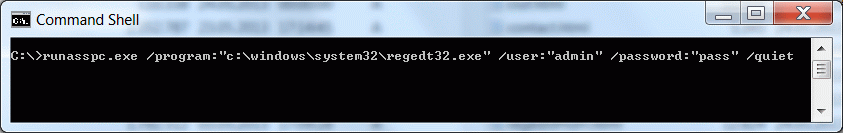 Es wird keinerlei Sicherheitsprüfung durchgeführt und das Passwort liegt im Klartext vor. Um die Anmeldekennung zu verschlüsseln müssen Sie eine verschlüsselte Datei generieren. Das können Sie über Runasspc.exe (Kommandozeile) oder mit dem beigelegten Tool Runasspcadmin.(grafische Oberfläche). Siehe unten >> Crypt files Beispiele <<: Nachdem Sie ein Cryptfile erstellt haben, können Sie das Cryptfile mit Runasspc wie folgt aufrufen. A) Wenn das Cryptfiles >> crypt.spc >> heißt., können Sie es mit einem Doppelklick auf RunasSpc.exe im selben Verzeichnis starten. B) Per Drag and Drop. Ziehen Sie das Cryptfile auf Runasspc.exe. C) Über die Kommandozeile ohne einen Zwischendialog von Runasspc durch die Option /quiet >> c:\runasspcEn\runasspc.exe /cryptfile:"pfad\NameOfCryptfile.spc" /quiet<< D) Erstellen einer Verknüpfung >> c:\runasspcEn\runasspc.exe /cryptfile:"pfad\NameOfCryptfile.spc"<< E) Verbinden Sie die Dateiendung des Cryptfiles*.spc im System mit RunasSpc.exe (öffnen mit). Sie können auch Ihre eigene Dateiendung verwenden. Crypt files Beispiele: A) Über die Commandline mit Runasspc.exe (Konsole) Sie finden Beispiele in der mitgelieferten Datei readme.txt oder rufereadme.txtn Sie auf >> runasspc -h >> um Hilfe zu bekommen. B) Mit RunasSpcAdmin.exe (Grafische Oberfläche).Sehen sie auch unser Beispielvideo Screenshot starte Registry unter der lokalen Anmeldekennung administrator. 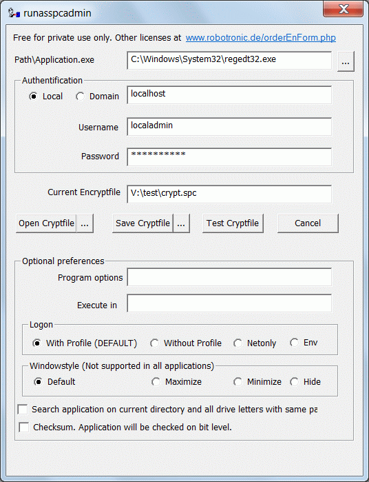 Um das Exceldokument molecularWheigtCalculation.xls unter dem Domänenaccount departmentuser zu starten. 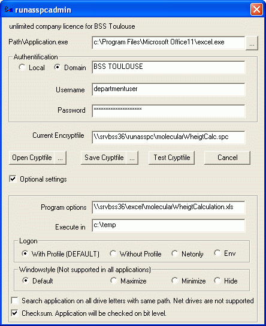 Um die MSI Datei acdSee 4.0.msi zu installieren 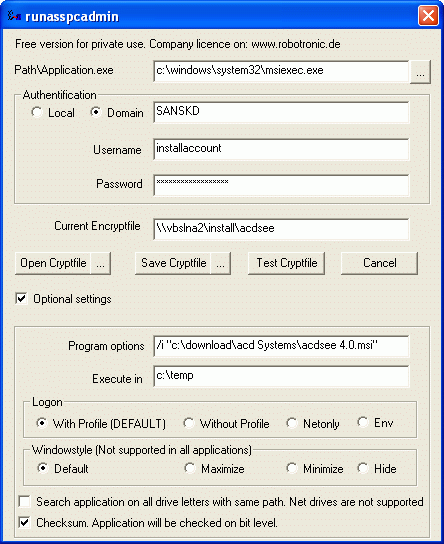 Um eine MSC Datei zu starten wie z.B.die Computerkonsole 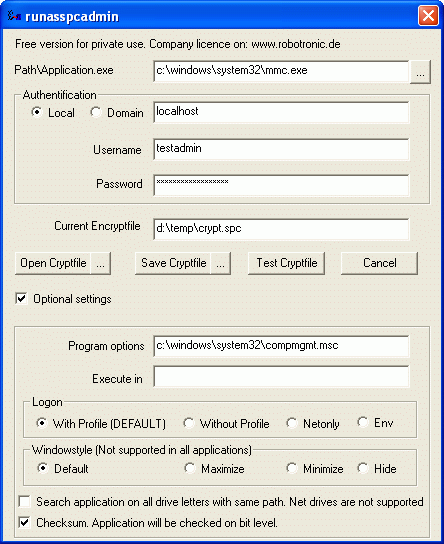 Um ein VBScript zu starten. 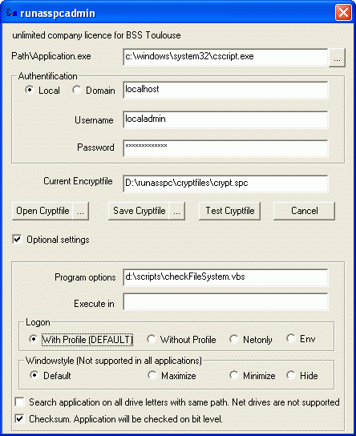 Einen Registrierungseintrag setzen 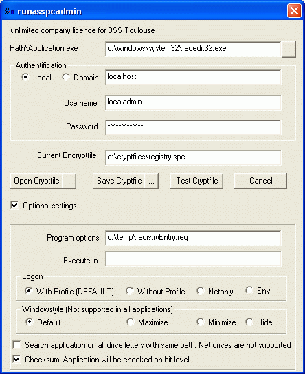 Eine Batchdatei wie .cmd oder .bat zu starten 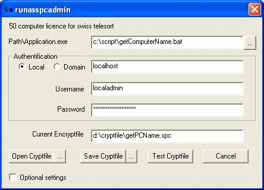 Java installieren mit den Parametern /S /V /qn 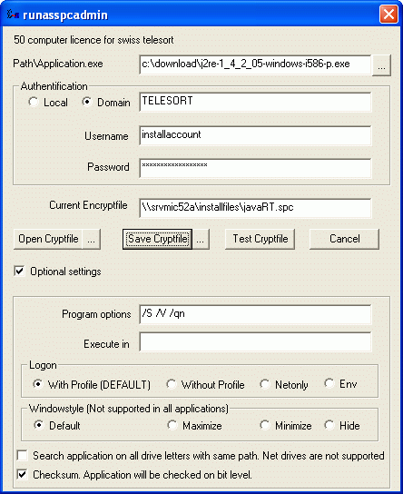 Eine Batchdatei mit den Parametern optionA optionB optionC starten 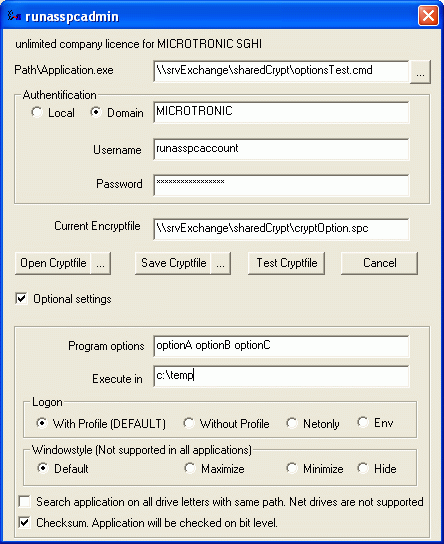 Umgebungsvariablen verwenden 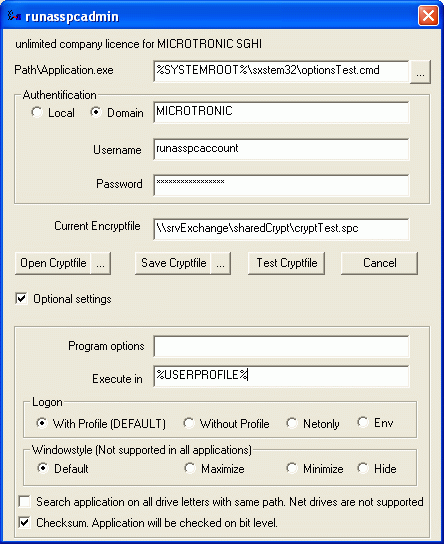 Über rundll32 das Softwareinstallationsapplet aufrufen 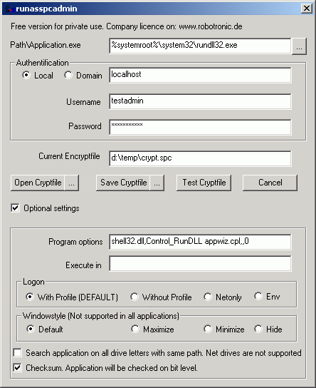 Kontakt: Bei Verbesserungsvorschlägen, Fehlern oder Fragen wenden sie sich bitte an: service@robotronic.de RunasSpc Lizenz Runasspc ist nur für den privaten Gebrauch frei nutzbar. Für Unternehmen gibt es auf den Unternehmensnamen registrierte Versionen. Bestellung RunasSpc >>> Download RunasSpc >>> |